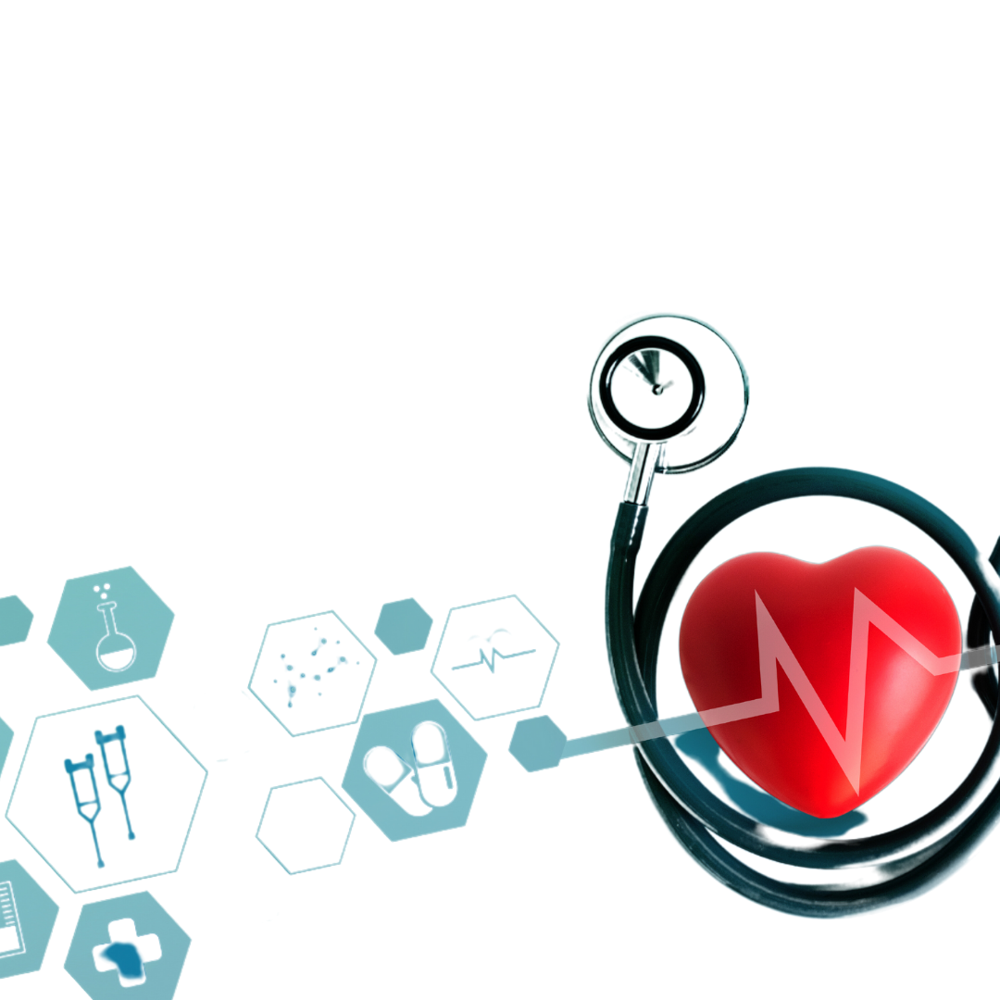
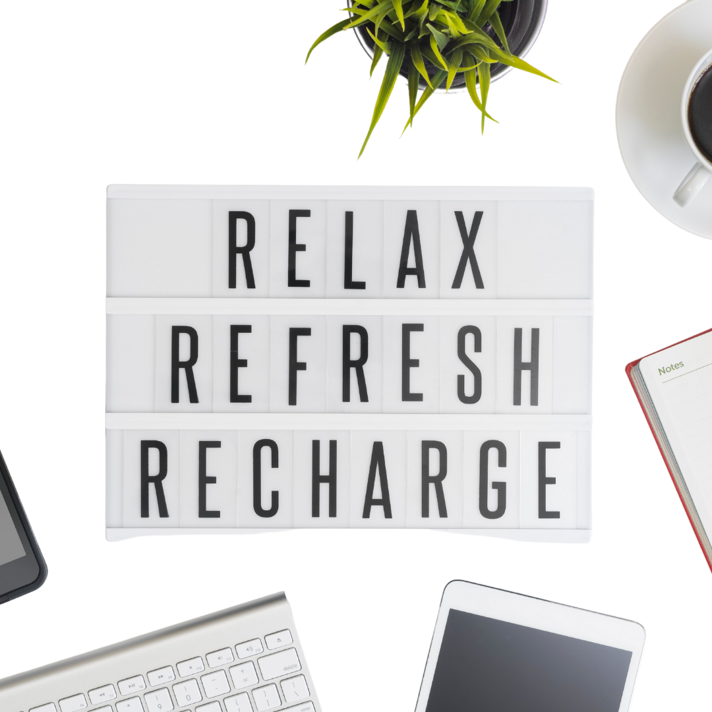

Why Is Your Health Important?
September 29, 2021 by Rushawn Campbell

We live in a fast-pace world and I am sure most of us can relate to being so busy, being exhausted at the end of each day. Sometimes
things move so fast that eating healthy, getting enough rest, refreshing ourselves through meditation, taking care of ourselves spiritually
becomes low priority. If this description fits you, don't feel bad. What's important is what you do now to change this unfortunate reality.
Your health is important because you are important and the change starts with you. Do not forget how special you are. We have one
body so we must take care of it. If our physical, emotional, spiritual health is not priority, how will we really take care of the things we
are being busy for in the first place? Try to get more sleep, eat properly (healthy and on time), Watch that movie or series you have wanted to,
give your self some tlc and remember to give God thanks. You will be surprised how much improvement you see daily, try it!
Relax, Refresh, Recharge!
September 29, 2021 by Rushawn Campbell

Who wouldn't want a phone or a laptop that never needs a recharging? We use these devices everyday to accomplish some task
and as we use and as time goes buy, their energy capacity gets depleted. With constant use, these devices eventually
lags or slows down in performance. Did you know that the same can be said of us as humans ? I am not saying we have batteries
in us like these material items!
Like phones or laptops, we are constantly engaged in activities and for hours at that. We have all these tasks to do and all these deadlines
to meet. Sometimes we get mentally exhausted which leads to us forgetting our tasks. Is it our fault and do we always have control
over these low performances? In a sense it is our fault, but don't get upset on me now, lol. Just like phones and laptops, we need to
remember to recharge and refresh ourselves. Take a moment to relax and not stress, rejuvenate yourself to continue the
mountainous tasks that you may have to deal with, and it will get down from a mountain, to a hill then to a flat. You never fail with
Relaxing, Refreshing and Recharging.